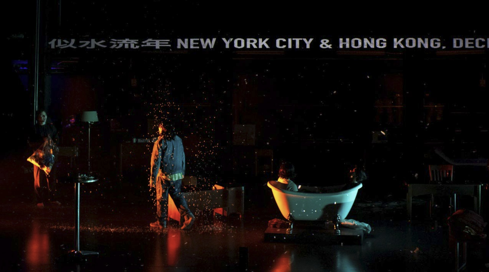
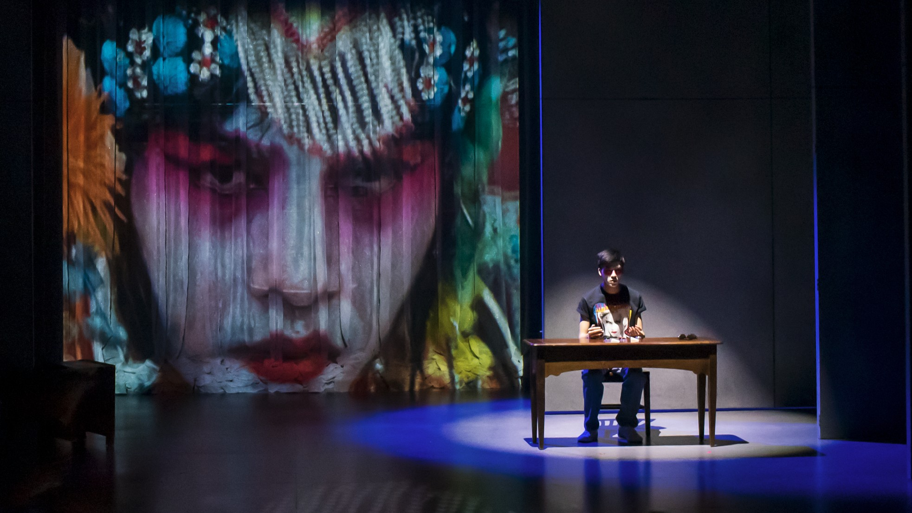
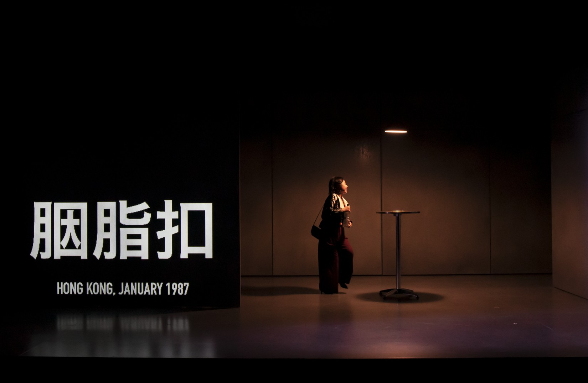
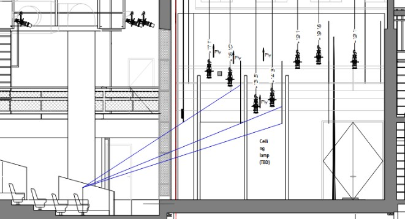
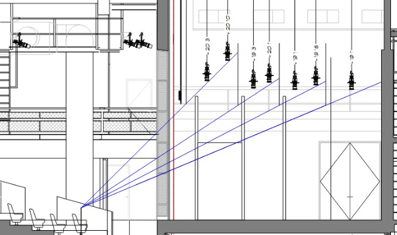
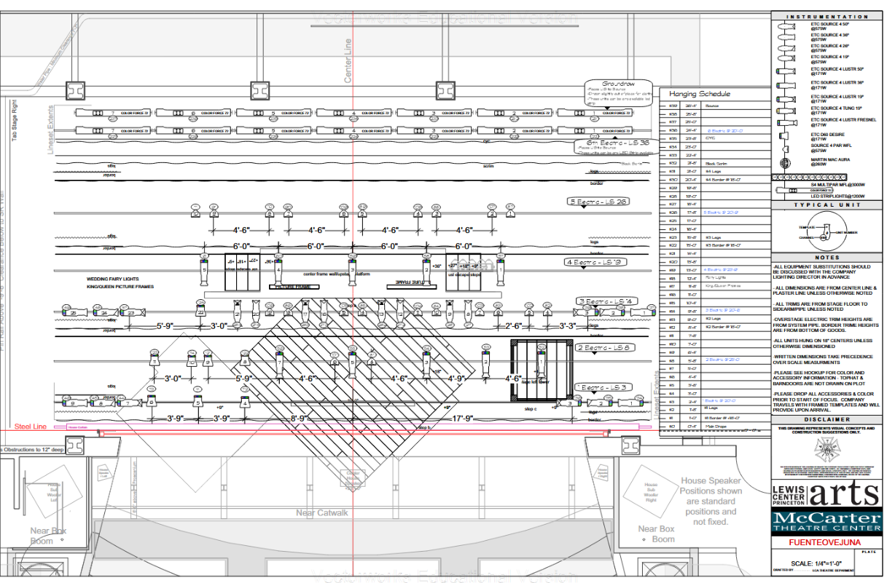
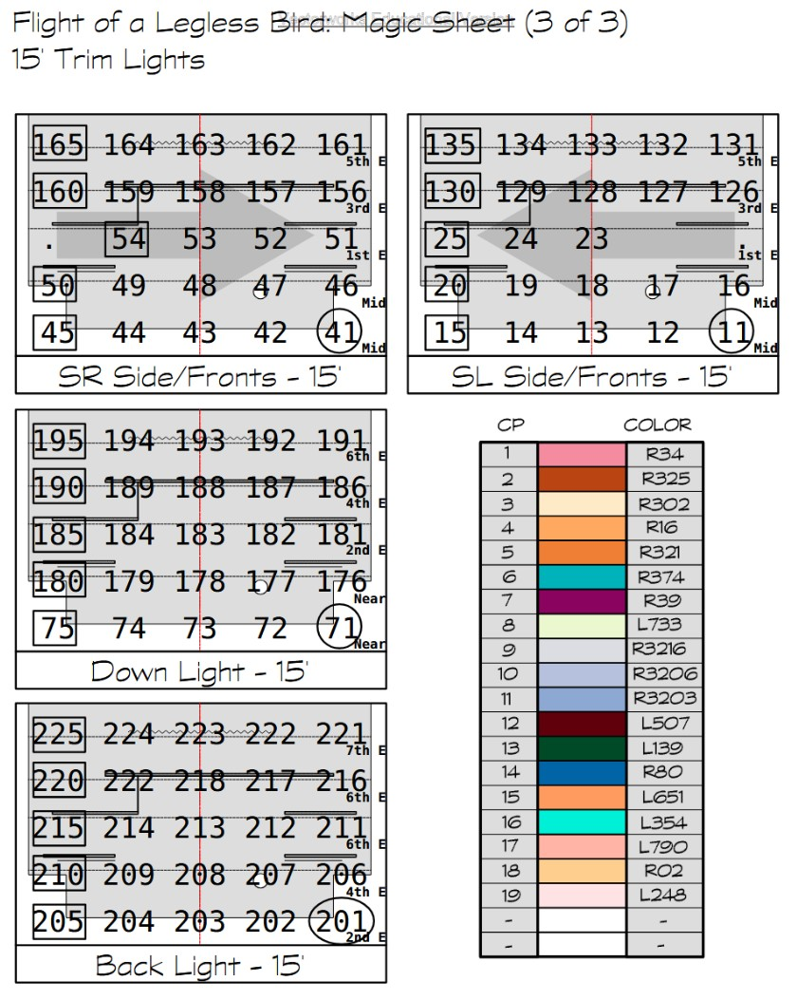

Flight of a Legless Bird
Lewis Center for the Arts
Lighting Design
Advised by Jane Cox.
Directed by Ethan Luk, Secenic Design by Wesley Cornwell, Costume Design by Mel Ng, Projection Design by Danny Landez. 2024.





Design Process
Vectorworks

Section view of sightlines to the electrics with 10' borders in Vectorworks.

Section view of sightlines to the electrics with 15' borders in Vectorworks.
Design Package
Vectorworks

Plan view of the lighting units above the stage. Made in Vectorworks.

Magic sheet for Act II with 15' borders.